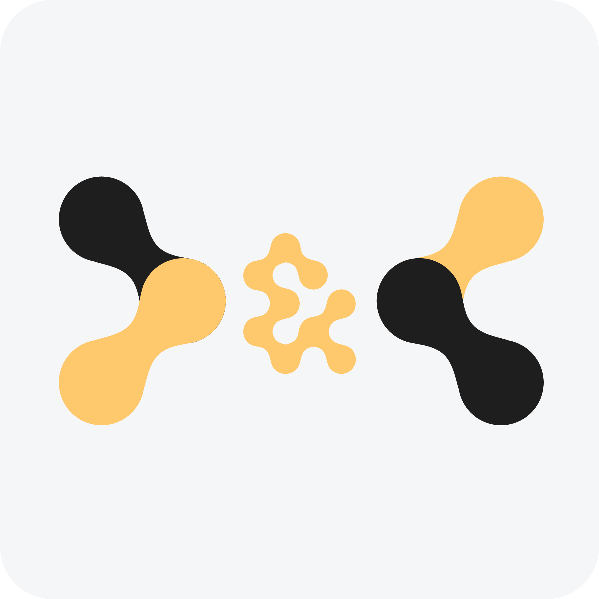

Análise de ficheiros SAF-T com KPIs executivos, directamente no Odoo.
O SAF-T Analyser by D&C Science in Business conecta o Odoo ao motor de análise Factiviz. Carregue qualquer ficheiro SAF-T (XML) exportado do vosso software de contabilidade e obtenha em segundos KPIs financeiros estruturados e um relatório HTML completo — sem sair do Odoo.
Wizard integrado em Contabilidade. Carregue o XML e obtenha resultados sem mudar de aplicação.
Faturação total, ticket médio, taxa de devoluções, concentração de clientes, IVA estimado.
Relatório visual guardado como anexo no registo. Partilhável e abrível em qualquer browser.
Cada análise fica registada em Análises SAF-T com todos os KPIs e o relatório associado.
URL, Tenant ID e API Key em Definições. Botão "Testar Ligação" confirma a configuração.
O motor analítico corre nos servidores D&C. O ficheiro original não é armazenado.
Subscrição gerida em factiviz.sciencebusiness.pt. Tenant ID e API Key fornecidos após subscrição.
✅ Odoo 16, 17, 18 ·
✅ Licença OPL-1 ·
✅ Dependências: base, account, mail ·
✅ Ficheiros SAF-T PT (AT) e SAF-T genérico